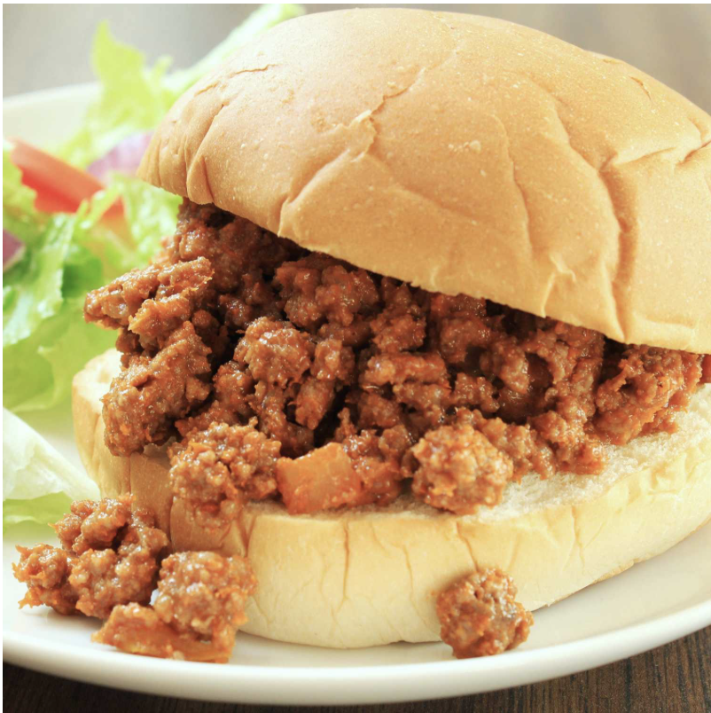

Sloppy Joes Recipe
Home

Prep Time: 5 mins
Cook Time: 30 mins
Total Time: 35 mins
Servings: 6
Yield: 6 sandwiches
Description
A Sloppy Joe is a sandwich consisting of ground beef and onions in a tomato-based sauce served on a hamburger bun. The sandwich likely originated in Sioux City, Iowa in the 1930s. According to legend, the "loose meat sandwich" was the creation of a cook named Joe.
Ingredients
- 1 pound lean ground beef
- ¼ cup chopped onion
- ¼ cup chopped green bell pepper
- ¾ cup ketchup, or to taste
- 1 tablespoon brown sugar, or to taste
- 1 teaspoon yellow mustard, or to taste
- ½ teaspoon garlic powder
- salt and ground black pepper to taste
- 6 hamburger buns, split
Directions
- Heat a large skillet over medium heat. Cook and stir lean ground beef in the hot skillet until some of the fat starts to render, 3 to 4 minutes. Add onion and bell pepper; continue to cook until vegetables have softened and beef is cooked through, 3 to 5 more minutes.
- Stir in ketchup, brown sugar, mustard, and garlic powder; season with salt and pepper. Reduce heat to low and simmer for 20 to 30 minutes.
- Divide meat mixture evenly among hamburger buns.